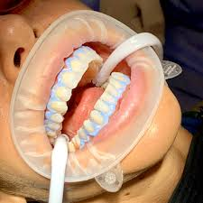
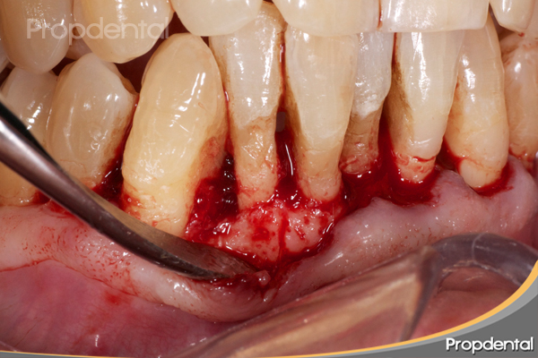

Exámenes Dentales Completos
Los exámenes dentales son fundamentales para mantener una buena salud bucal. Durante la consulta, nuestro dentista evaluará la salud de tus dientes, encías y boca en general. Se realizarán radiografías si es necesario para detectar problemas ocultos.

Limpieza Dental Profesional
La limpieza dental profesional es un procedimiento que elimina la placa y el sarro acumulado en los dientes. Esto ayuda a prevenir caries y enfermedades de las encías. Se recomienda realizar limpiezas cada seis meses.
Tratamientos de Caries
Las caries son uno de los problemas dentales más comunes. Nuestro equipo está capacitado para diagnosticar y tratar caries de manera efectiva, restaurando la salud de tus dientes mediante empastes o tratamientos más avanzados si es necesario.

Blanqueamiento Dental
El blanqueamiento dental es un tratamiento estético que ayuda a eliminar manchas y decoloraciones de los dientes. Utilizamos productos seguros y efectivos para lograr resultados visibles y duraderos.
Ortodoncia
La ortodoncia se encarga de corregir los dientes y mandíbulas desalineados. Ofrecemos diferentes opciones de tratamiento, incluyendo brackets tradicionales y alineadores invisibles, para mejorar tu sonrisa y función dental.
Implantes Dentales
Los implantes dentales son una solución permanente para reemplazar dientes perdidos. Se colocan en el hueso maxilar y funcionan como raíces de dientes naturales, proporcionando estabilidad y funcionalidad.
Tratamientos de Endodoncia
La endodoncia, o tratamiento de conducto, es un procedimiento que se realiza para salvar un diente dañado o infectado. Se elimina el tejido dañado y se sella el conducto radicular para prevenir futuras infecciones. Este tratamiento puede aliviar el dolor y salvar el diente afectado.
Asesoramiento en Higiene Bucal
Ofrecemos asesoramiento personalizado sobre higiene bucal para ayudarte a mantener tus dientes y encías saludables. Te enseñaremos las mejores prácticas de cepillado, uso de hilo dental y elección de productos adecuados.
Extracciones Dentales
Las extracciones dentales son necesarias cuando un diente está dañado más allá de la reparación. Nuestro equipo realiza el procedimiento de manera segura y con anestesia para minimizar el dolor y la incomodidad.
Cirugía de Implantes Dentales
La cirugía de implantes dentales implica la colocación de un implante en el hueso maxilar. Este procedimiento se realiza bajo anestesia y es fundamental para reemplazar dientes perdidos de manera efectiva.

Cirugía Periodontal
La cirugía periodontal se realiza para tratar enfermedades de las encías avanzadas. Este procedimiento puede incluir la eliminación de tejido enfermo y la regeneración de encías saludables.

Cirugía Ortognática
La cirugía ortognática corrige problemas en la mandíbula y la mordida. Este procedimiento puede mejorar la función masticatoria y la estética facial, y se realiza en colaboración con ortodoncistas.
Aumento de Hueso
El aumento de hueso es un procedimiento que se realiza para preparar el área para implantes dentales. Se utiliza material óseo para aumentar la densidad y volumen del hueso maxilar.
Cirugía de Lesiones Orales
Este procedimiento se realiza para tratar lesiones y anomalías en la boca. Nuestro equipo está capacitado para diagnosticar y tratar diversas condiciones orales de manera efectiva.
Cirugía de Frenillo
La cirugía de frenillo se realiza para corregir problemas con el frenillo, que puede afectar la movilidad de la lengua o los labios. Este procedimiento es rápido y puede mejorar la función oral y la estética.
Cirugía de Rehabilitación Oral
La cirugía de rehabilitación oral es un enfoque integral para restaurar la función y estética dental. Este procedimiento puede incluir múltiples tratamientos para devolver la salud bucal a los pacientes que han sufrido pérdida dental o daño severo.